AI tools in the scribe workbench that cut note turnaround time from 24 hours to 12.
Enterprise UX
AI
Healthcare
The problem
How can we use AI from our AWS HealthScribe partnership to improve the scribe workflow and turnaround time?
Summary
Fluency Align is an ambient note-generation service by Solventum (formerly 3M) that saves providers hours of documentation each week. Providers record their visits, and the audio streams to our scribing workbench, where scribes listen and write the note. The provider then reviews it and signs off.
Our solution
Improve the Fluency Align workbench with three AI components: a draft note, a transcript and evidence mapping. Together they reduce the time it takes to get notes back to providers, while also helping to train the AI model.
24→12hNote turnaround time
8Scribes tested the mid-fidelity prototype
60%Of scribes preferred AI suggestions as they work
The product
Fluency Align workbench × AWS
The AWS integration helps scribes document jobs faster. The transcript makes the audio easier to follow, and the draft note gives scribes a framework to build on instead of starting every job from scratch. Evidence mapping links the transcript to the generated note, so you know every part of the note came from the visit; if it can’t be connected, it isn’t included.
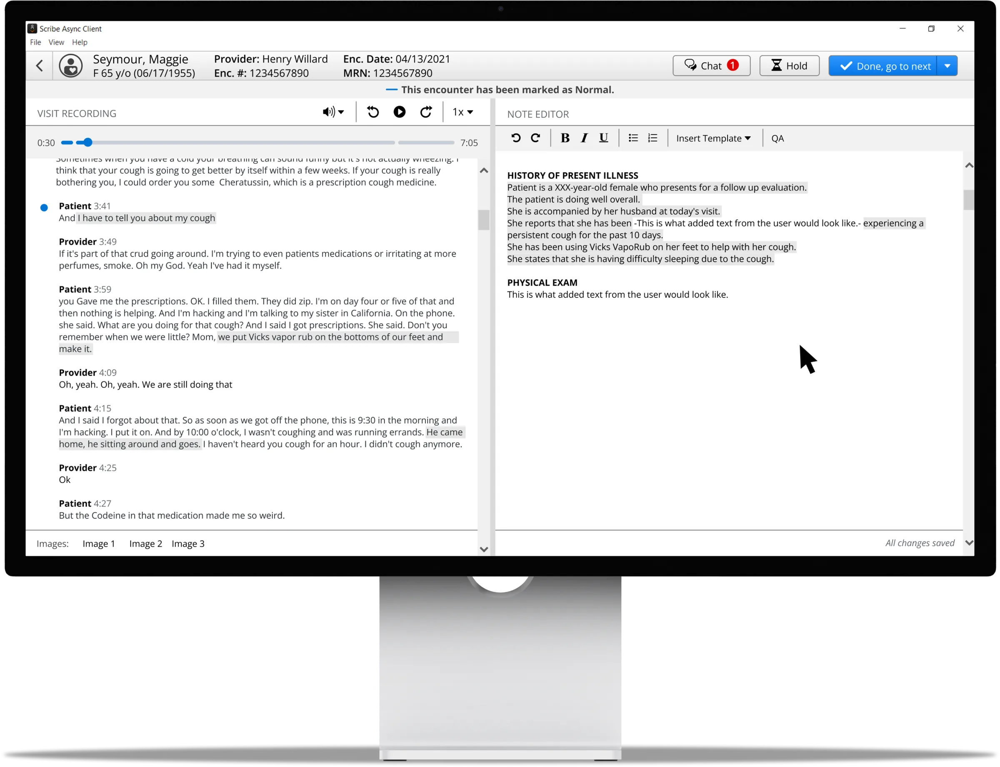
Evidence mapping
How it works
The provider’s audio is automatically sent to AWS HealthScribe to generate a draft note, which is ready when the scribe opens the job. The transcript on the left comes straight from the visit audio. Any highlighted text in the transcript or note can be selected to show its evidence mapping, a visual link that makes the AI generation transparent. Scribes use these tools to send providers a finished note faster, with the accuracy the evidence mapping gives them.
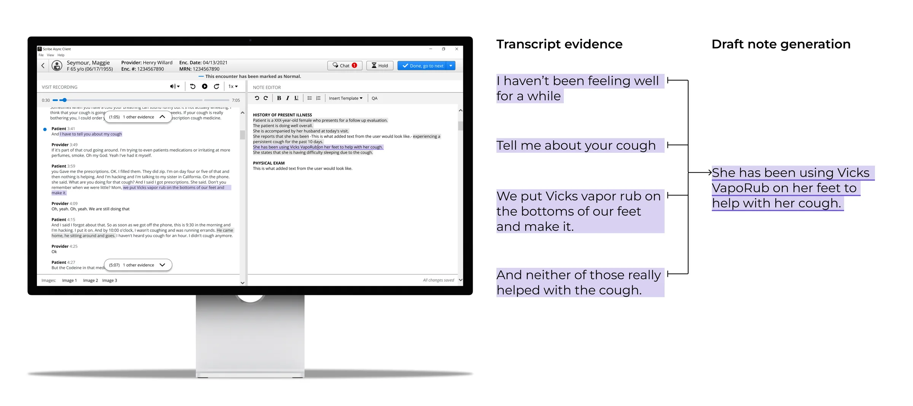
The outcome
Quicker turnaround time
Once a provider records their audio, it goes straight to a scribe, and the finished note appears in their electronic health record (EHR) for a quick review and sign-off. With the AWS integration, we confidently cut the turnaround time from 24 hours to 12, which immediately led to positive feedback from providers.
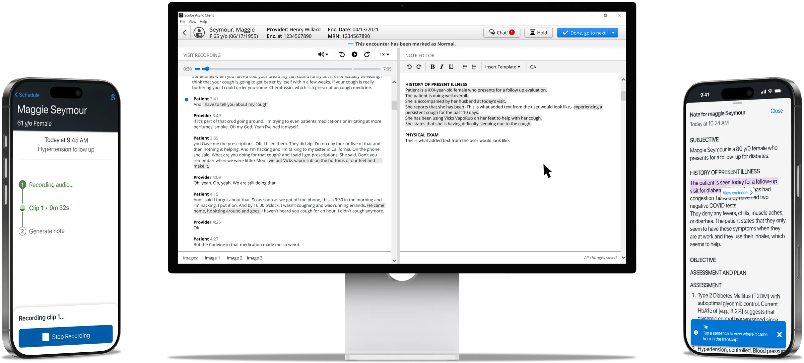
Process overview
How we got there
Current workflow
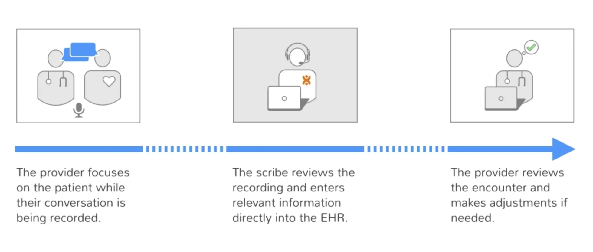
Fluency Align generates notes for providers so they don’t have to spend time documenting patient visits. A provider records the visit and any extra information, a scribe listens to the recording and writes the note, and it’s sent to the provider’s EHR within an agreed turnaround time. The provider only needs to review, edit and sign off. Collaborating with AWS gave us the opportunity to use their AI technology to speed up the scribes’ workflow and shorten that turnaround.
Current version of workbench
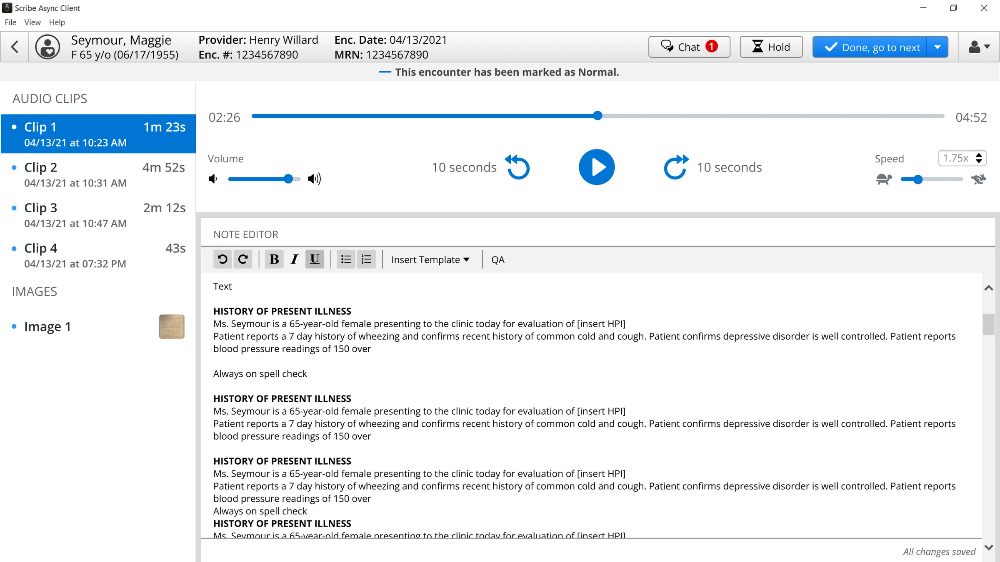
The existing workbench had no AI. Scribes listened through the audio clips and wrote each note from scratch. That kept documentation accurate but was time-consuming: we expected each job to take 2.5 times the length of the recorded audio, and the turnaround time was 24 hours. Once our first providers started using it, this was the main area they wanted improved.
Research
Our research focused on the draft note and evidence mapping, with questions about the transcript answered along the way. A customer deadline gave us a short timeline, which pushed us to be creative about saving time.
Co-creation workshop
We needed to figure out when to show scribes the draft note. In a 2.5-hour collaborative workshop, we presented a few concepts and asked when they’d prefer to get the draft note and why. Scribes anonymously dot-voted for their preferred design, which led into an open discussion. It was a close split: 60% preferred AI generations appearing as they go, and 40% wanted everything available at the start. Those who wanted it as they went worried about removing irrelevant information and losing track of what they’d written versus what the AI had. Those who wanted it upfront worried relevant information wouldn’t appear at the right time and would go unused.
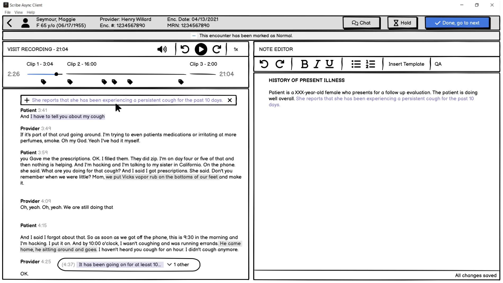
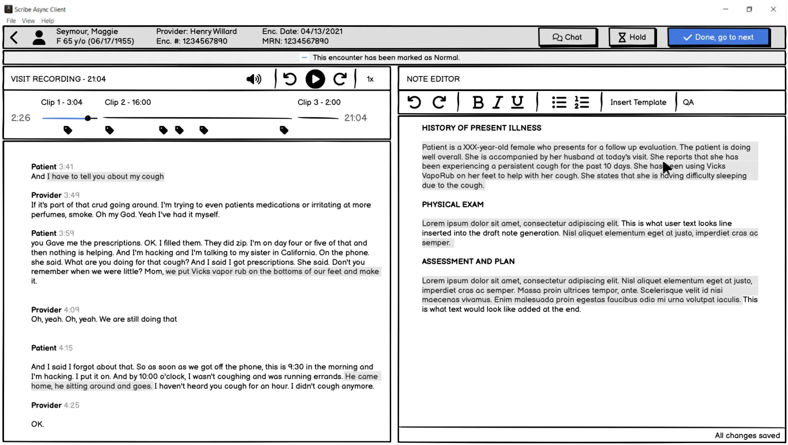
Co-creation takeaway
We moved forward with including the draft note at the start. It was a tough call, since scribes slightly preferred the other option, but it was much easier to build, and we were confident the AI-generated note would improve quickly, making irrelevant content less of a concern over time. It also saved future rework, as we knew the scribe’s job would shift from writing notes to auditing them as the technology improved.
Mid-fidelity prototype
The workshop showed us that evidence mapping was hard to grasp from static screens, so we scheduled another session and tested several concepts in a mid-fidelity prototype. The main question was whether interacting with evidence should be implicit, revealed during the scribe’s normal workflow, or explicit, needing a click to surface. Based on feedback from the first session, we also styled AI-generated text differently from scribe-written text in the note editor. We got feedback from 8 scribes in this session.
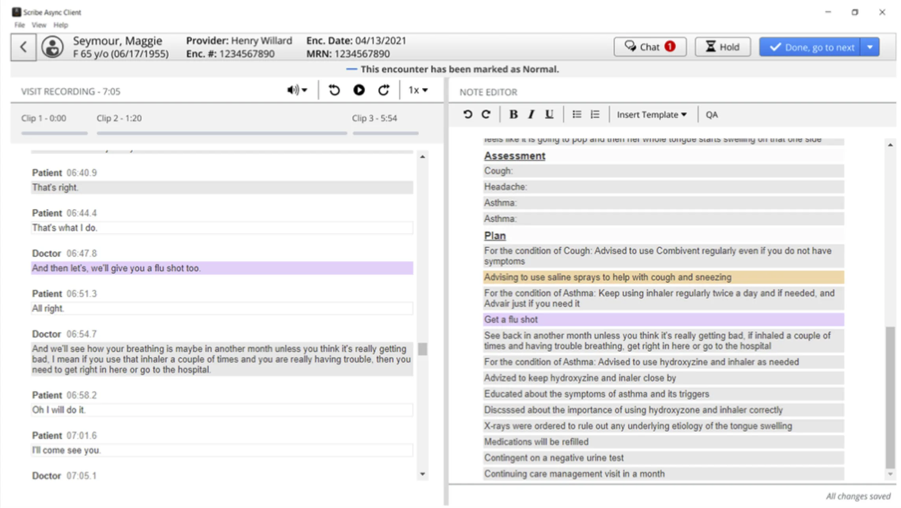
Mid-fidelity takeaway
Implicit interaction was the clear preference. Most scribes liked how obvious it was which text was AI-generated, and that they could see where it came from without the extra click an explicit workflow would add. It also meant their existing editing interactions stayed the same.
High-fidelity iterations
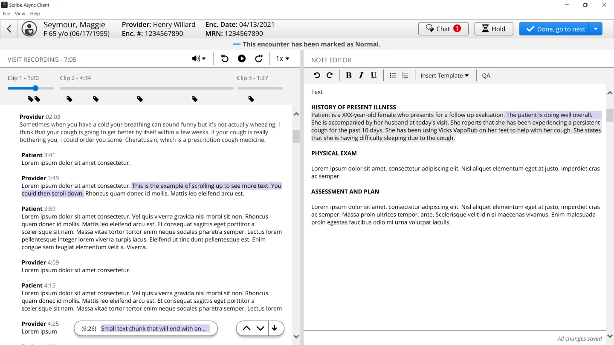
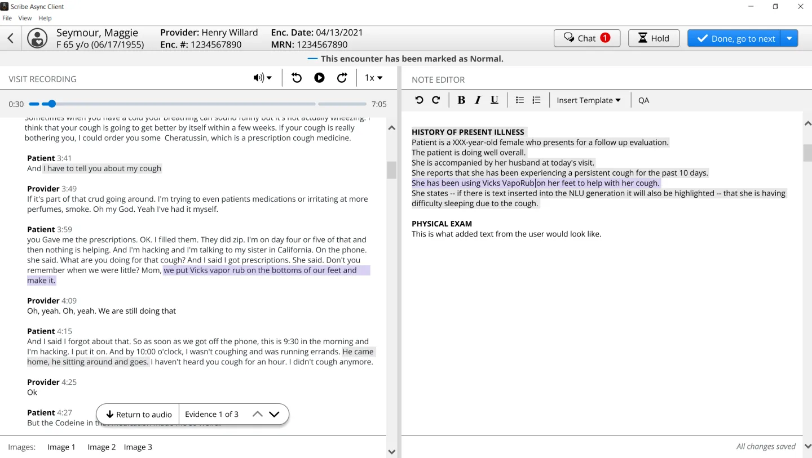
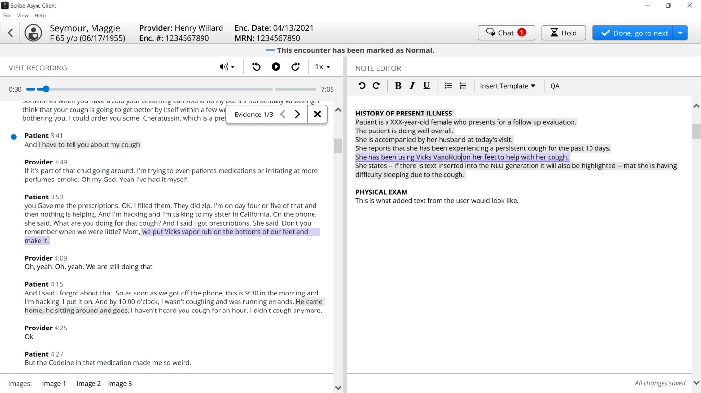
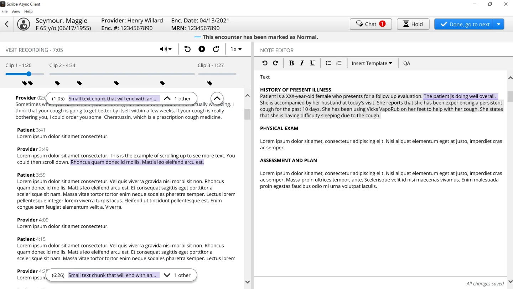
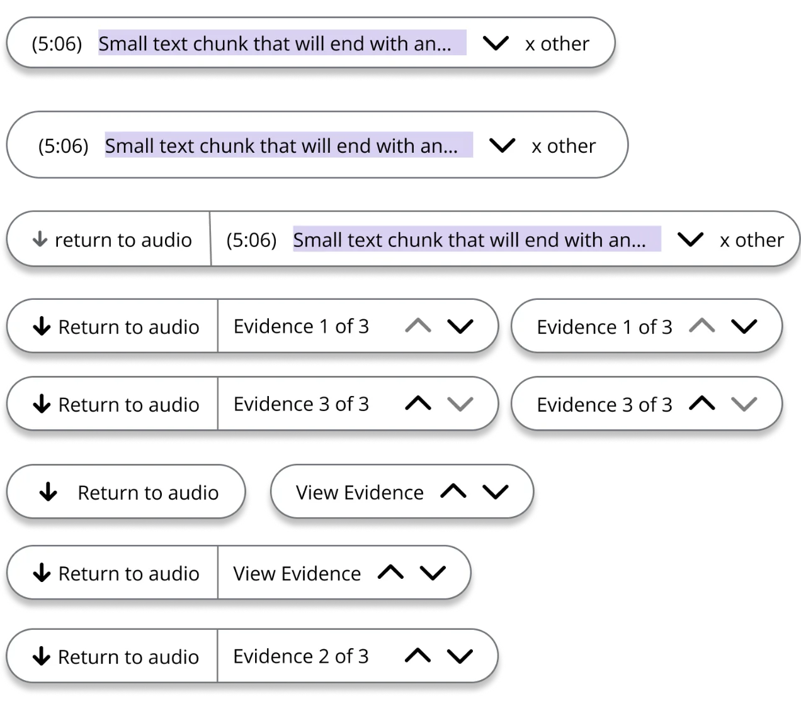
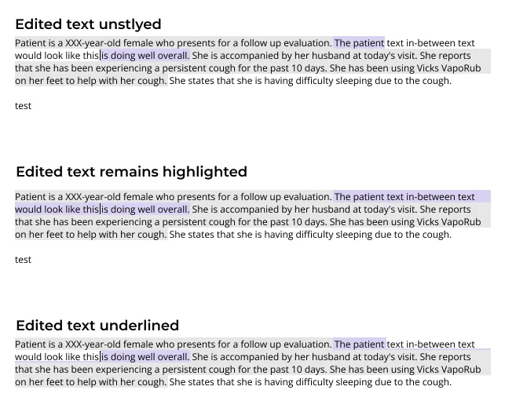
With a clear direction from our two research sessions, we explored adding the complete draft note with implicit evidence mapping. We kept refining how best to show the link between evidence in the transcript and the note, and how to indicate when the evidence sits above or below the visible part of the transcript.
Final product
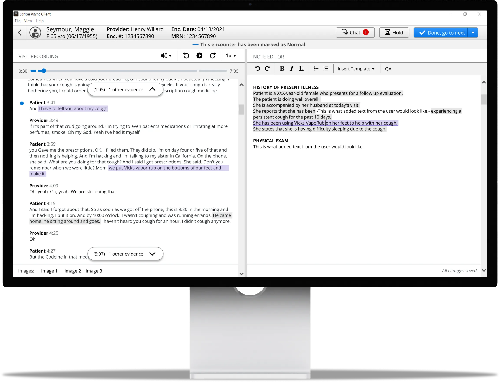
The AWS integration brought several tools that enhance the scribe workflow. The draft note saves time by giving scribes a starting point. The transcript is a visual aid for the audio and lets them glance ahead during slow stretches. Evidence mapping ties the two together, creating a trustworthy link between the generated note and the conversation. This let us cut turnaround time from 24 hours to 12, while giving the natural language understanding (NLU) models a training ground to improve quickly.
What I learned
I learned to make sure the concepts I share are at a fidelity people can understand in the format I’m sharing them. We expected to get feedback on evidence mapping in the co-creation workshop, but the low-fidelity designs didn’t get the concept across, so we had to squeeze in an extra mid-fidelity prototype. We ended up in a good spot, but the extra session pushed back our handoff. It’s made me more thoughtful about what fidelity a concept needs to get useful feedback from different stakeholders.